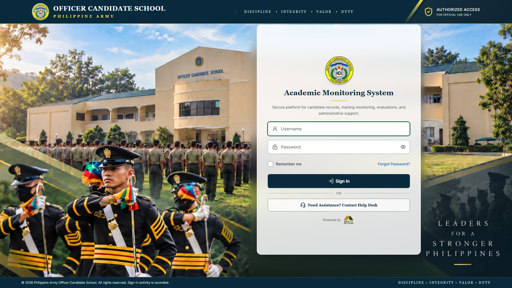

Philippine Army
Officer Candidate School
Academic System
System Proposal
Academic Monitoring
System
One secure platform for candidate records, grades, digital quizzes and examinations, and academic monitoring — running on the school’s own network.
Academic Monitoring System · Sign In

Academic Monitoring SystemSystem Proposal
Overview
Contents
- 1Executive Summary3
- 2The Challenge4
- 3The Proposed System5
- 4Who Uses the System6
- 5Features and Modules7
- 6How Everyday Work Changes11
- 7Benefits to the School12
- 8Security, Privacy and Setup13
{{target}}
Purpose of this proposal
To present the Academic Monitoring System to the school’s leadership: what it is, what it does, who uses it, how it fits the school’s daily work, and how it can be introduced step by step.
At a Glance
4
User rolesAdministrators, instructors and candidates each see only what they need.
4
Academic standingsPassing, Needs Improvement, Failing and Incomplete, computed automatically.
3
Question typesMultiple choice, true or false, and essay, with images, audio and video.
8
Ready-made reportsStanding, class and subject performance, Needs Improvement and Failing lists, results and grade distribution.
{{wifi-off}}
No internet neededRuns on the school’s own server and network.
{{history}}
Full audit historyImportant changes record who made them, when and why.
About this document. This proposal describes the Academic Monitoring System as it has been built. Every feature listed here is already working in the system and can be shown in a live demonstration.
Academic Monitoring System · System Proposal2
Academic Monitoring SystemExecutive Summary
1
Section One
Executive Summary
The Academic Monitoring System is a web-based platform built for the Philippine Army Officer Candidate School. It brings candidate records, grading, quizzes and examinations, academic monitoring, military fitness records and candidate expenses together in one place.
Staff use the system from an ordinary computer. Candidates take quizzes and examinations on school-issued tablets. Everything runs on the school’s own server and internal network, so the system does not depend on internet access and the school’s records stay on the school’s own equipment.
Its purpose is simple: help instructors and administrators record results accurately, see early which candidates need help, and run examinations reliably, with less paperwork and no manual grade computation.
{{calculator}}
Accurate, automatic grades
Grades are computed by the system from the school’s own grading weights. No hand computation and no separate spreadsheets.
{{triangle-alert}}
Early warning
Candidates who need improvement or are failing are flagged as soon as scores are recorded, not at the end of the period.
{{tablet}}
Reliable digital examinations
Tablet examinations with a timer, automatic saving and protection against brief Wi-Fi interruptions. Objective items are scored instantly.
{{shield-check}}
Accountability
Each user sees only what their role allows, and important changes, such as grade corrections, record who, when and why.
What the school receives
- Central records for candidates, classes, subjects and instructors
- Configurable grading with automatic academic standing
- Dashboards and reports built from live records
- A reusable question bank for quizzes and examinations
- Tablet-based examinations with live instructor monitoring
- A personal portal for each candidate
- Military fitness testing records and scoring
- Expense assignment to classes or individual candidates
Academic Monitoring System · System Proposal3
Academic Monitoring SystemThe Challenge
Training schools that manage candidate records on paper and in separate spreadsheets commonly face the challenges below. Each one grows as the number of candidates, subjects and examinations increases. The system was designed to address all of them.
{{file-text}}
Paper-based quizzes and examinations
Printing, distributing, collecting and checking papers by hand takes many hours, and papers can be misplaced.
{{calculator}}
Manual grade computation
Weighted grades computed by hand or in separate files are slow to prepare, and errors are easy to make and hard to find.
{{clock}}
Problems noticed too late
A candidate who is falling behind may only be noticed when final grades are prepared, when there is little time left to help.
{{folders}}
Scattered records
Grades, examination results, fitness results and expenses are often kept in different files, offices and formats.
{{file-chart-column}}
Slow reporting
Summaries of class and subject performance must be compiled by hand each time management asks for them.
{{search}}
Limited traceability
When a grade is changed, it can be hard to know who changed it, when, and for what reason.
The answer: one trusted source of information
The Academic Monitoring System replaces scattered paper and spreadsheet work with one secure system. Results are recorded once, grades are computed automatically, problems are visible immediately, and every important change is recorded.
Academic Monitoring System · System Proposal4
Academic Monitoring SystemThe Proposed System
3
Section Three
The Proposed System
The system is organized into modules that share the same records. A score entered by an instructor immediately updates the candidate’s grade, standing, dashboards and reports.
{{graduation-cap}}
Candidate RecordsProfiles, photos, classes and official PDFs{{school}}
Academic StructurePeriods, classes, subjects and instructors{{calculator}}
Grades and StandingWeights, assessments and automatic grades{{activity}}
Academic MonitoringDashboards and early warning{{library}}
Question BankReusable questions with media{{clipboard-check}}
Quizzes and ExamsBuilder, settings and publishing{{tablet}}
Tablet ExaminationsTimer, autosave and recovery{{monitor-check}}
Live MonitoringWho is active, done or away{{file-chart-column}}
ReportsEight reports with charts and printing{{dumbbell}}
Military FitnessEvents, standards and scoring{{wallet-cards}}
ExpensesAssigned to classes or candidates{{history}}
Audit HistoryWho changed what, when and why
How it runs at the school
The system is installed on a server at the school. Computers and tablets connect to it through the school’s own Wi-Fi or local network, the same way they would open a web page.
{{tablet}}
Candidate TabletsQuizzes and examinations; installable as an app{{arrow-right-left}}
{{monitor}}
Staff ComputersAdministrators and instructors{{arrow-right-left}}
{{wifi}}
School NetworkInternal Wi-Fi or local area network{{arrow-right-left}}
{{server}}
School ServerThe system and its database, kept on site
{{wifi-off}}No public internet required. The system does not rely on outside services, cloud storage or online resources to work, and the school’s records do not leave the school’s network.
Academic Monitoring System · System Proposal5
Academic Monitoring SystemWho Uses the System
4
Section Four
Who Uses the System
Every user signs in with their own account. What they can see and do depends on their role and, for instructors, on the classes and subjects assigned to them.
{{shield-check}}
Super Administrator
Overall system management
- Manages user accounts, roles and permissions
- Has access to every module and record
- Reviews the full audit history
- Charges candidates for expenses, such as uniforms or meals
{{user-round-cog}}
Academic Administrator
Academic office
- Manages candidates, classes, subjects and academic periods
- Assigns instructors to classes and subjects
- Sets grading rules and passing and warning grades
- Views monitoring, reports, fitness and audit history
{{presentation}}
Instructor
Only for assigned classes and subjects
- Records and finalizes grades for assigned subjects
- Builds questions, quizzes and examinations
- Monitors examinations live and grades essays
- Sees alerts and reports for their own candidates
{{graduation-cap}}
Candidate
Signs in with their candidate number, on a school tablet
- Takes available quizzes and examinations
- Sees their own grades, standing and released results
- Views their own information, subjects and instructors
- Downloads their own registration and academic record
Academic Monitoring System · System Proposal6
Academic Monitoring SystemFeatures and Modules
5
Section Five
Features and Modules
{{graduation-cap}}
Module 5.1
Candidate and Academic Records
All candidate information is kept in one place and linked to the school’s academic structure: academic periods, classes or batches, subjects and instructor assignments.
- Candidate number, name, class, training group and status
- Candidate photo, stored privately on the school server
- Enrollment statuses: enrolled, on leave, withdrawn, completed
- Academic periods, classes, subjects and instructor assignments
- Period overview showing every class, subject and instructor
- Printable Certificate of Registration and Academic Record PDFs
{{calculator}}
Module 5.2
Grades and Academic Standing
Each subject has its own grading categories and weights, set by the academic office. For example, Quizzes 20%, Examinations 30%, Practical 30% and Other Requirements 20%. Instructors record scores, and the system computes every grade.
- Assessments with raw scores, finalized when complete
- Passing and warning grades set for each academic period
- Corrections to finalized scores require a reason and are kept in history
- Missing scores are shown as missing, never silently counted as zero
- Academic standing is computed automatically:
PassingNeeds ImprovementFailingIncomplete
{{activity}}
Module 5.3
Academic Monitoring and Early Warning
Dashboards show the academic status of the school at a glance and point directly to the candidates who need attention.
- Administrator dashboard: totals by standing, standing distribution, subject performance and grade distribution charts
- Instructor dashboard: assigned subjects, upcoming assessments and academic alerts by subject
- Lists of Needs Improvement and Failing candidates with filters
- Candidate academic profile: grades by subject, recent assessments and overall standing
Academic Monitoring System · System Proposal7
Academic Monitoring SystemFeatures and Modules
{{library}}
Module 5.4
Question Bank
Instructors build a library of reusable questions for each subject, organized by topic. Questions can be used again in later quizzes and examinations.
Multiple ChoiceTrue or FalseEssay
- Points, topic and an optional explanation for each question
- Images, audio and video can be added to a question
- Images can also be used inside answer choices
- Import many questions at once from a prepared CSV file
- Duplicate a question to make a variation quickly
- Questions are deactivated rather than deleted, so past examinations keep their history
{{clipboard-check}}
Module 5.5
Quiz and Examination Builder
Instructors create a quiz or examination in three guided steps: settings, questions, then review and publish. They can only publish to the classes they are assigned to.
Schedule and limits
- Opening and closing date and time
- Time limit and number of attempts allowed
- Passing score
Fairness and integrity
- Shuffle the order of questions and answer choices
- Give each candidate a random set of questions from a larger pool
- Optional access code to start
Navigation
- One question at a time or all questions on one page
- Allow or prevent going back to earlier questions
Results
- Automatic submission when time runs out
- Instructor decides when candidates may see results
{{tablet}}
Module 5.6
Tablet Examination Experience
Candidates take quizzes and examinations on tablets through a simple, distraction-free screen designed for touch. The candidate portal can be installed on the tablet’s home screen and opens full screen like an app.
- Large answer buttons, clear progress and a visible timer
- Question list showing answered, unanswered and flagged questions
- Answers are saved automatically as the candidate works
- If Wi-Fi drops briefly, answers are kept on the tablet and sent when the connection returns
- Clear save status: saved, saving, or stored on the device
- Submission confirmation and a receipt; a second submission is not possible
Academic Monitoring System · System Proposal8
Academic Monitoring SystemFeatures and Modules
{{monitor-check}}
Module 5.7
Live Examination Monitoring
While an examination is running, the instructor’s screen refreshes on its own and shows the progress of the whole class. Candidates’ answers are never shown on this screen.
Inactiveno recent contact
- Leaving the examination screen is recorded. If a candidate switches to another app or window, the instructor sees how many times and for how long. It is an indicator for the instructor; it does not use the camera or microphone and does not penalize anyone automatically.
{{badge-check}}
Module 5.8
Scoring, Essay Grading and Results
Multiple-choice and true-or-false items are scored instantly when a candidate submits. Essays go to a grading queue for the instructor.
- Essay grading queue with points and feedback
- Results are shown to candidates only after the instructor releases them
- Grading changes are kept in a history
- Post to gradebook: examination scores can be sent into the subject’s grades in one step, choosing the highest or latest attempt
- Item analysis: shows how many candidates got each question right and which answers they chose, helping instructors spot questions that were too hard, too easy or unclear
{{file-chart-column}}
Module 5.9
Reports and Dashboards
Reports are built directly from the system’s records, so they are always current. Each report can be filtered by academic period, class, subject or candidate, shown with charts, and printed or saved as a PDF.
Candidate standingClass performanceSubject performanceCandidates needing improvement
Failing candidatesExamination resultsQuiz resultsGrade distribution
From score to report, without re-typing
A result is entered once. Everything that depends on it is updated by the system.
{{pencil-line}}
Score recordedBy the instructor, or scored from an examination{{chevron-right}}
{{calculator}}
Grade computedUsing the subject’s own weights{{chevron-right}}
{{badge-check}}
Standing updatedPassing, Needs Improvement, Failing or Incomplete{{chevron-right}}
{{layout-dashboard}}
Dashboards and reportsShow the new status at once
Academic Monitoring System · System Proposal9
Academic Monitoring SystemFeatures and Modules
{{dumbbell}}
Module 5.10
Military Fitness Testing
The school defines its own fitness events and standards, records test results for each class, and the system scores them. Fitness results are kept as a separate record and do not change academic grades.
- Events measured in repetitions or time, each with a passing and a maximum standard
- Standards are copied into each test, so later changes never alter past results
- Results show passed, failed or incomplete, with charts by event
- Each candidate’s profile shows their latest fitness results
{{wallet-cards}}
Module 5.11
Expenses
The administrator defines an expense once, for example a uniform set or a month of meals, with its category, amount and due date, then assigns it to a whole class or to chosen candidates in one action.
- Assign to a whole class or pick candidates by class or by search
- A candidate can never be charged the same expense twice
- A mistaken charge is voided with a reason, never erased
- Lists of charged candidates and totals for each expense
The system records amounts only. It does not process payments or connect to banks.
{{house}}
Module 5.12
Candidate Portal
Each candidate has a simple personal portal that shows only their own information.
- My Home: open and upcoming examinations, academic standing and recent released results
- Assessments that still have no recorded score
- My Information: details, subjects, instructors, grades and history
- Download their own Certificate of Registration and Academic Record
{{history}}
Module 5.13
Audit History
Important actions are recorded automatically, including sign-ins, account and role changes, candidate record changes, grade entries and corrections, examination publishing and result release. Administrators can search this history by person, action and date.
Clear limits, by design
To keep the system focused, safe and easy to run, it intentionally does not:
- process payments or connect to banks
- use cameras, microphones or screen recording
- depend on the internet or outside cloud services
- show candidates any other candidate’s records
Academic Monitoring System · System Proposal10
Academic Monitoring SystemHow Everyday Work Changes
6
Section Six
How Everyday Work Changes
The most common tasks follow short, clear steps. Below are the main workflows as they work in the system today.
{{presentation}}
Instructor: recording grades
1
Sign inSees assigned subjects and alerts{{chevron-right}}
2
Open a class subjectThe gradebook lists every candidate{{chevron-right}}
3
Record scoresEnter scores for an assessment{{chevron-right}}
4
FinalizeGrades update automatically{{chevron-right}}
5
See standingPassing, Needs Improvement, Failing, Incomplete {{tablet}}
Candidate: taking an examination
1
Open the portalOn a school tablet{{chevron-right}}
2
Sign inWith the candidate number{{chevron-right}}
3
Start the examAccess code if required{{chevron-right}}
4
AnswerSaved automatically{{chevron-right}}
5
SubmitReceipt shown; results when released {{clipboard-check}}
Instructor: running an examination
1
BuildSettings and questions from the bank{{chevron-right}}
2
PublishTo an assigned class{{chevron-right}}
3
Monitor liveActive, submitted, away{{chevron-right}}
4
Grade essaysObjective items already scored{{chevron-right}}
5
Release and postResults and gradebook {{user-round-cog}}
Administrator: reviewing academic status
{{chevron-right}}
2
See overall statusCounts and charts by standing{{chevron-right}}
3
Find who needs helpNeeds Improvement and Failing lists{{chevron-right}}
4
Review a candidateAcademic profile{{chevron-right}}
5
ReportFilter, print or save PDF {{wallet-cards}}
Administrator: charging an expense
1
Create the expenseName, category, amount, due date{{chevron-right}}
2
Choose whoA whole class or chosen candidates{{chevron-right}}
3
Set the dateThe date of the charge{{chevron-right}}
4
ChargeEach candidate once; others skipped{{chevron-right}}
5
ReviewTotals; void mistakes with a reason
Academic Monitoring System · System Proposal11
Academic Monitoring SystemBenefits to the School
7
Section Seven
Benefits to the School
The table compares common manual practices with how the same work is done in the system.
| Area | Typical manual process | With the Academic Monitoring System |
|---|
| Examinations | Printed papers, collected and checked by hand | Taken on tablets; objective items scored instantly |
| Grade computation | Weighted grades computed by hand or in spreadsheets | Computed automatically from the school’s own weights |
| Struggling candidates | Often noticed only when final grades are prepared | Flagged as Needs Improvement or Failing as soon as scores are recorded |
| Records | Spread across files, offices and formats | One central, linked record for each candidate |
| Reports | Compiled by hand for each request | Eight ready-made reports, filtered and printed in minutes |
| Grade changes | Hard to trace who changed what | Every correction records the person, time and reason |
| Examination integrity | Same paper for everyone; limited oversight | Shuffled questions, random question sets, live monitoring |
| Candidate access | Candidates ask the office for grades and records | Candidates see their own released results and records |
{{clock}}
Saves staff time
Less checking, computing and compiling by hand.
{{target}}
Improves accuracy
One set of rules applied the same way for everyone.
{{heart-handshake}}
Helps candidates sooner
Early warning gives time to act.
{{eye}}
Clear visibility
Current status for management at any time.
{{lock}}
Protects records
Role-based access and a complete audit history.
{{leaf}}
Less paper
Fewer printed examinations and forms.
In short
Instructors spend less time on paperwork and more time teaching. Administrators see the academic status of every class as it happens. Candidates get fair, reliable examinations and clear access to their own results.
Academic Monitoring System · System Proposal12
Academic Monitoring SystemSecurity, Privacy and Setup
8
Section Eight
Security, Privacy and Setup
Academic records and examinations are sensitive. The system was built with protection in mind from the start.
{{key-round}}
Controlled access
Personal accounts with securely stored passwords. Access is granted by role and permission; instructors see only their assigned classes. Staff accounts created or reset by an administrator must set a new password at the next sign-in.
{{lock}}
Protected examinations
Answer keys are never sent to candidate tablets. Time limits and attempt limits are enforced by the server, not only by the tablet. Results stay hidden until released.
{{shield-check}}
Safeguards against misuse
Repeated failed sign-ins and repeated access-code guesses are slowed down. Inactive accounts cannot sign in. Candidates can never open another candidate’s records.
{{history}}
Traceable changes
Important actions are recorded in the audit history. Finalized grades are never silently overwritten: corrections keep the old value, new value, person and reason.
What the school needs to run the system
{{server}}
A school server
One computer at the school to host the system and its database, ideally with a regular backup routine.
{{wifi}}
The school network
The school’s existing Wi-Fi or local network, reaching classrooms and examination rooms.
{{tablet}}
Devices
Staff computers and candidate tablets with a modern web browser. No other software is required.
Records stay on the school’s own server. Regular database backups, and occasional test restores, are recommended as part of normal operations.
Academic Monitoring System · System Proposal13